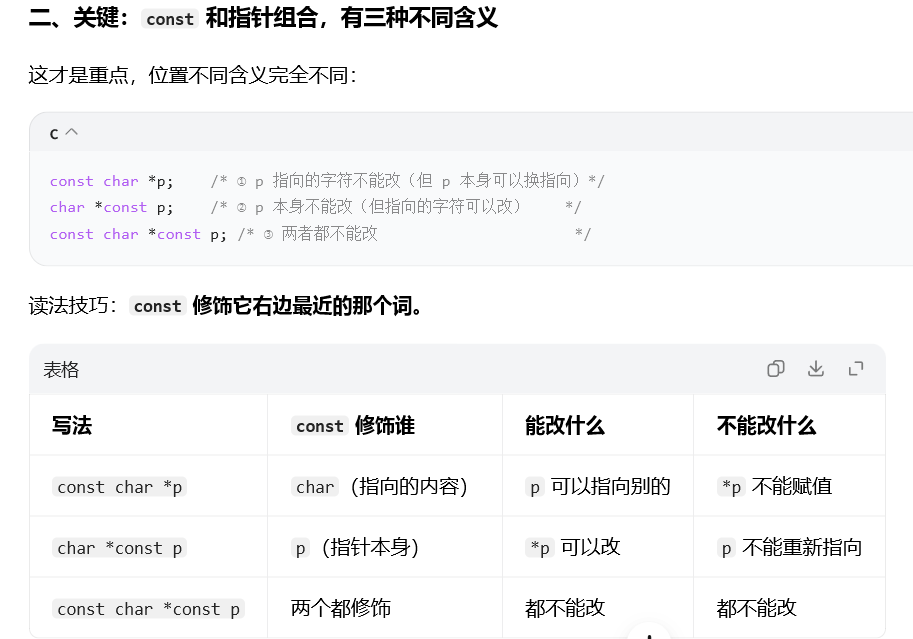

（一）指针的本质
指针是存放地址的变量，& 取地址，* 解引用。指针的类型决定了"一次解引用访问多少字节"以及"指针加减移动多少字节"。
int a = 10;
int *p = &a; /* p 存放 a 的地址 */
*p = 20; /* 通过指针修改 a */（二）指针运算与数组关系
p + 1移动sizeof(*p)个字节，不是 1 个字节。- 同一数组内的两个指针相减，得到相隔的元素个数（
ptrdiff_t）。 a[i]等价于*(a + i)，也等价于*(i + a)。
（三）多级指针与函数指针
int **pp; /* 指向"int 指针"的指针 */
int (*fp)(int, int); /* 函数指针：指向返回 int、两个 int 参数的函数 */
int (*pa)[4]; /* 数组指针：指向 int[4] */
int *parr[4]; /* 指针数组：4 个 int* 元素 */int (*fp)(int,int) 与 int *fp(int,int) 完全不同：后者是"返回指针的函数"。读法：从变量名出发，先看右边，再看左边，括号优先。
函数指针最常见的正经用途就是回调：把它当参数传给别人，由对方在合适的时机调用。写法与标准库例子见第五章（三）。
（四）const 与指针
| 写法 | 含义 |
|---|---|
const int *p | 指向的内容不可改，指针本身可改 |
int * const p | 指针本身不可改，指向的内容可改 |
const int * const p | 两者都不可改 |
口诀：const 修饰它左边的东西；左边没有东西时，修饰右边的类型。另一种同样流行的记法是"const 修饰它右边最近的那个词"，两种说法指向同一个结论 —— 关键看 const 和 * 谁在前。

（五）空指针与野指针
- 空指针：
int *p = NULL;，解引用会崩溃，使用前必须判空。 - 野指针：未初始化的指针，指向随机地址；
free之后未置空的指针（悬垂指针）同样危险。 - 关键细节：
free(p)只归还内存，不会把p置成NULL。释放后p仍指向那块已经不属于你的地址，这就是悬垂指针的成因，也是free之后要立刻p = NULL的理由。 - 纪律：指针定义即初始化；
free(p); p = NULL;成对出现。